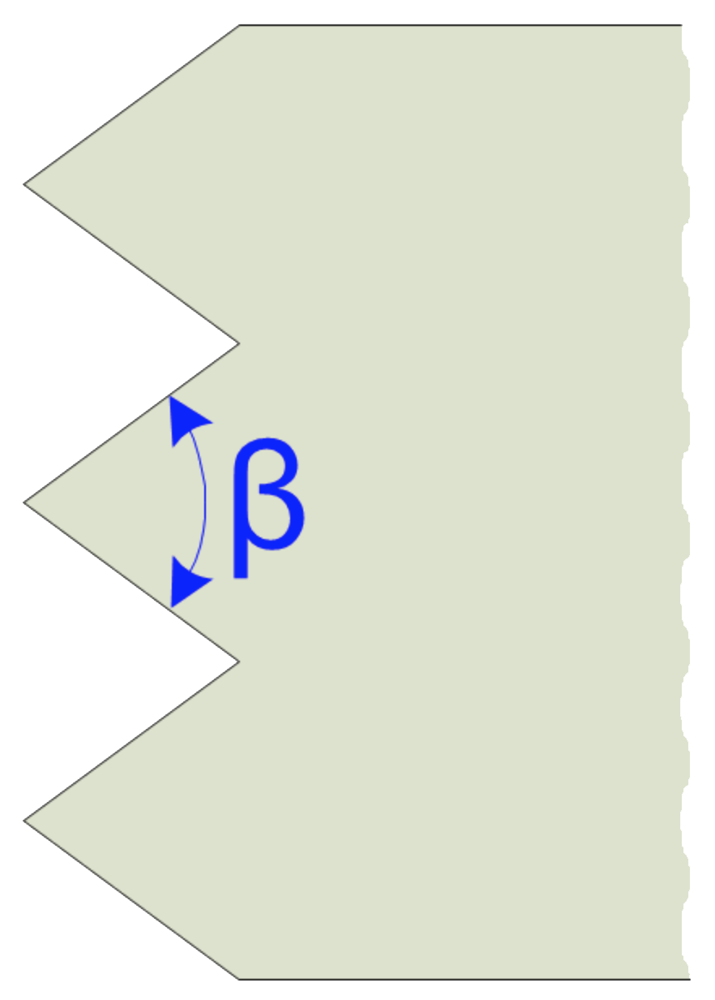

|
Because sharp enough ... usually is not |

|
Stone Carving Frosting Tool

Edge Angle
Guidelines shown below are for the cutting edge angle.
Frequent sharpening is recommended to maintain the tool's shape, and is needed for safe performance of the tool.
|
Carving is a source of joy to the artist. . . . To attack the raw material, gradually to extract a shape out of it following one's own desire, or, sometimes, the inspiration of the material itself: this gives the sculptor great joy. Aristide Maillol |
Use larger angles for roughing out, and sharper (more acute) angles for finishing cuts.

Special Notes for Tools with Carbide Inserts: Do not cool by dipping in water : this will generate shocks in the metal, and cause the carbide to crack.
When sharpening, one of the following options is recommended.
Special thanks to Oleg Lobykin at StoneSculpt - Custom Stone Carving for providing the guidance.

Example icon
Sharpness scales (as shown in the grey icon to the left) are used to indicate the recommended sharpness for the blades noted above. You can click on any of the icons showing the sharpness scale and be redirected to the page describing this more. Lower numbers are duller; higher numbers sharper.
These are general recommendations; you will need to use your own judgment, based on the knive’s intended purpose.